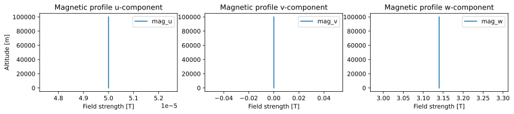
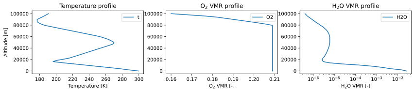
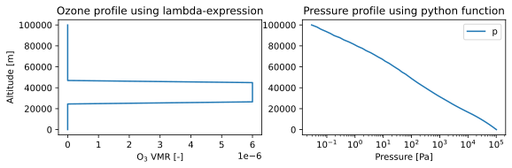

The atmosphere
The atmosphere of ARTS is always fully 3D with coordinates of altitude, geodetic latitude, and longitude.
The atmosphere in ARTS is represented by three key components: the atmospheric field, the atmospheric field data, and the atmospheric point.
The atmospheric field contains all physical data of the entire atmosphere. Each property of the atmospheric field (temperature field, pressure field, VMR fields, etc.) is stored as an atmospheric field data object, representing the full 3D field of that property. The local state of the atmospheric field is represented by an atmospheric point. An atmospheric point effectively holds the local state of the atmosphere at a specific location.
Key notations:
AtmField: The atmospheric field. An instance is in this text named:atm_field. An example from the workspace isatmospheric_field.AtmData: The atmospheric field data. An instance is in this text named:atm_data. These do not generally live on the workspace.AtmPoint: The local atmospheric state. An instance is in this text named:atm_point. An example from the workspace isatmospheric_point.
Note
This text will also only deal with the core functionality of each of these three classes. For more advanced and supplementary functionality, please see the API documentation of the classes themselves. We will explicitly not cover file handling, data conversion, or other such topics in this text.
The full atmospheric field
An atmospheric field is represented by the class AtmField.
The atmospheric field holds a collection of atmospheric field data, AtmData,
that can be accessed and modified through a dict-like interface.
An atmospheric field has a maximum altitude, top_of_atmosphere, above which it is considered undefined.
It has no minimum altitude, instead relying on an external ellipsoid and elevation field to define the surface of the planet below it.
The ellipsoid and the elevation field are (often) part of the SurfaceField class
and are described in The surface and planet.
The atmospheric field can be called as if it were a function taking altitude, geodetic latitude, and longitude
coordinate arguments to compute or extract the local atmospheric state, AtmPoint.
The core operations on atm_field are:
atm_field[key]: Accessing relevant atmospheric field data:AtmData. See Atmospheric field/point data access for more information on what constitutes a validkeyatm_field.top_of_atmosphere: The maximum altitude of the atmosphere. This is the altitude above which the atmospheric field is undefined.atm_field(alt, lat, lon): Compute the local atmospheric state (AtmPoint) at the given coordinate. It is an error to call this withalt > atm_field.top_of_atmosphere.
Shorthand graph for atm_field:
A single atmospheric point
An atmospheric point holds the local state of the atmosphere.
This is required for local calculations of radiative transfer properties,
such as absorption, scattering, emission, etc.
An atmospheric point is represented by an instance of AtmPoint.
The main use on an atmospheric point is to access the local, numerical state of the atmosphere.
The core operations on atm_point are:
atm_point[key]: The local state as afloat. See Atmospheric field/point data access for more information on what constitutes a validkey.atm_point.temperature: The localtemperature[K] as afloat.atm_point.mag: The local magnetic field (mag) as aVector3[T].atm_point.wind: The local wind field (wind) as aVector3[m/s].
Shorthand graph for atm_point:
Note
The atmospheric point does not know where it is in the atmosphere. This information is only available in the atmospheric field. Positional data must be retained by the user if it is needed for calculations.
Atmospheric field/point data access
The access operator atm_field[key] is used to get and set atmospheric field data (AtmData)
in the atmospheric field through the use of types of keys.
Likewise, the access operator atm_point[key] is used to get and set data in the atmospheric point,
though it deals with pure floating point data.
Each type of key is meant to represent a different type of atmospheric data.
The following types of keys are available:
AtmKey: Basic atmospheric data. Defines temperature [K], pressure [Pa], wind [m/s], and magnetic [T] components.SpeciesEnum: Content of species. This most often means “volume mixing ratio” (VMR) but for historical reasons there are exceptions. VMRs need not sum up to 1 for practical reasons.SpeciesIsotope: Isotopologue ratios. These are ratios of different isotopologues of the same species. As for VMRs they need not sum up to 1 per species for practical reasons. These are defaulted to values extracted from HITRAN, complemented by other sources as necessary.QuantumLevelIdentifier: Non-LTE data. These are the state distributions of energy levels of molecules required for non-LTE calculations.ScatteringSpeciesProperty: Scattering properties of the atmosphere. These are properties of the atmosphere that are relevant for scattering calculations.
Shorthand graph for key of different types:
Tip
Both atm_field["temperature"] and atm_field[pyarts3.arts.AtmKey.temperature] will give
the same AtmData back in python. This is
because pyarts3.arts.AtmKey("temperature") == pyarts3.arts.AtmKey.temperature.
The same is also true when accessing atm_point, though it gives floating point values.
Note
Using python str instead of the correct type may in very rare circumstances cause name-collisions.
Such name-collisions cannot be checked for. If it happens to you, please use the appropriate key
type manually to correct the problem.
Atmospheric field data
The atmospheric field data is a core component of the atmospheric field.
It is stored in an instance of AtmData.
This type holds the entire atmospheric data for a single atmospheric property,
such as the full 3D temperature field, the full 3D pressure field, etc.
It also holds the logic for how to interpolate and extrapolate this data to any altitude, geodetic latitude, and longitude point.
As such, atmospheric field data can also be called as if it were a function taking altitude, geodetic latitude, and longitude
to return the local floating point state of the atmospheric property it holds.
These are the core operations on atm_data:
atm_data.data: The core data in variant form. See Data types for what it represents.atm_data.alt_upp: The settings for how to extrapolate above the allowed altitude. What is “allowed” is defined by the data type.atm_data.alt_low: The settings for how to extrapolate below the allowed altitude. What is “allowed” is defined by the data type.atm_data.lat_upp: The settings for how to extrapolate above the allowed geodetic latitude. What is “allowed” is defined by the data type.atm_data.lat_low: The settings for how to extrapolate below the allowed geodetic latitude. What is “allowed” is defined by the data type.atm_data.lon_upp: The settings for how to extrapolate above the allowed longitude. What is “allowed” is defined by the data type.atm_data.lon_low: The settings for how to extrapolate below the allowed longitude. What is “allowed” is defined by the data type.atm_data(alt, lat, lon): Extract the floating point value of the data at one specific altitude, geodetic latitude, and longitude. Returns a single float. Cannot respect the top of the atmosphere because it is not available to the data. Instead, will strictly respect the extrapolation settings.
Shorthand graph:
Tip
An AtmData is implicitly constructible from each of the Data types described below.
The extrapolation settings will be set to appropriate defaults when an implicit construction takes place.
These default settings depend on the type and even available data.
Note
If the extrapolation settings or the data itself cannot be used to extract a value at a point using the call-operator,
the AtmData will raise an exception. This is to ensure that the user is aware of the problem.
Changing the extrapolation settings will likely fix the immediate problem, but be aware that the consequences of doing so
might yield numerical differences from what was originally expected.
Extrapolation rules
The rules for extrapolation is governed by InterpolationExtrapolation.
Please see its documentation for more information.
Extrapolation happens only outside the grids of the data.
Interpreting the data inside a grid is done on a type-by-type basis.
Data types
Below are the types of data that can be stored in the atmospheric data. Each data type has its own rules for how to interpret, interpolate, and extrapolate the data.
Tip
Different atmospheric field data types can be mixed in the same atmospheric field. There are no restrictions on how many types can be used in the same atmospheric field.
Numeric
Numeric data simply means that the atmosphere contains constant data.
Extrapolation rules are not relevant for this data type as it is constant everywhere.
An example of using Numeric as atmospheric field data is given in the following code block.
import matplotlib.pyplot as plt
import numpy as np
import pyarts3 as pyarts
atm_field = pyarts.arts.AtmField(toa=100e3)
atm_field["mag_u"] = 50e-6
atm_field["mag_v"] = 0
atm_field["mag_w"] = 3.14
fig = plt.figure(figsize=(14, 8))
fig, subs = pyarts.plots.AtmField.plot(atm_field, alts=np.linspace(0, 100e3), fig=fig, keys=["mag_u", "mag_v", "mag_w"])
subs[0].set_title("Magnetic profile u-component")
subs[1].set_title("Magnetic profile v-component")
subs[2].set_title("Magnetic profile w-component")
subs[0].set_ylabel("Altitude [m]")
[sub.set_xlabel("Field strength [T]") for sub in subs]
plt.show()
(Source code, svg, pdf)
{kind=link}

GeodeticField3
If the atmospheric data is of the type GeodeticField3,
the data is defined on a grid of altitude, geodetic latitude, and longitude.
It interpolates linearly between the grid points when extracting point-wise data.
For sake of this linear interpolation, longitude is treated as a cyclic coordinate between [-180, 180) - please ensure your grid is defined accordingly.
This data type fully respects the rules of extrapolation outside its grid.
An example of using GeodeticField3 as atmospheric field data is given in the following code block.
import matplotlib.pyplot as plt
import numpy as np
import pyarts3 as pyarts
atm_field = pyarts.arts.AtmField(toa=100e3)
atm_field["t"] = pyarts.arts.GeodeticField3.fromxml("planets/Earth/afgl/tropical/t.xml")
atm_field["O2"] = pyarts.arts.GeodeticField3.fromxml("planets/Earth/afgl/tropical/O2.xml")
atm_field["H2O"] = pyarts.arts.GeodeticField3.fromxml("planets/Earth/afgl/tropical/H2O.xml")
fig = plt.figure(figsize=(14, 8))
fig, subs = pyarts.plots.AtmField.plot(atm_field, alts=np.linspace(0, 100e3), fig=fig, keys=["t", "O2", "H2O"])
subs[0].set_title("Temperature profile")
subs[1].set_title("O$_2$ VMR profile")
subs[2].set_title("H$_2$O VMR profile")
subs[0].set_ylabel("Altitude [m]")
subs[0].set_xlabel("Temperature [K]")
subs[1].set_xlabel("O$_2$ VMR [-]")
subs[2].set_xlabel("H$_2$O VMR [-]")
subs[2].set_xscale("log")
plt.show()
(Source code, svg, pdf)
{kind=link}

Tip
It is possible to use any number of 1-long grids in a GeodeticField3 meant for use as a AtmData.
The 1-long grids will by default apply the “nearest” interpolation rule for those grids, potentially reducing the atmospheric data
to a 1D profile if only the altitude is given, or even a constant if all three grids are 1-long.
Note
If the GeodeticField3 does not cover the full range of the atmosphere, the extrapolation rules will be used to
extrapolate it. By default, these rules are set to not allow any extrapolation. This can be changed by setting the
extrapolation settings as needed. See headers Extrapolation rules and Atmospheric field data for more information.
Warning
Even though the longitude grid is cyclic, only longitude values [-540, 540) are allowed when interpolating the field. This is because we need the interpolation to be very fast and this is only possible for single cycles of the longitude. Most algorithm will produce values [-360, 360] for the longitude, so this should in practice not be a problem for normal use-cases. Please still ensure that the grid is defined properly or the interpolation routines will fail.
NumericTernaryOperator
This operator (NumericTernaryOperator) represents that the atmospheric property is purely
a function of altitude, geodetic latitude, and longitude. The operator takes three arguments and returns a float.
Extrapolation rules are not relevant for this data type as it is a function.
An example of using NumericTernaryOperator as atmospheric field data is given in the following code block.
import matplotlib.pyplot as plt
import numpy as np
import pyarts3 as pyarts
h = pyarts.arts.GeodeticField3.fromxml("planets/Earth/afgl/tropical/p.xml").grids[0]
p = pyarts.arts.GeodeticField3.fromxml("planets/Earth/afgl/tropical/p.xml").data.flatten()
def h2p(alt, *args):
return np.interp(alt, h, p)
atm_field = pyarts.arts.AtmField(toa=100e3)
atm_field["O3"] = lambda alt, lat, lon: 6e-6 if 25e3 < alt < 45e3 else 0
atm_field["p"] = h2p
fig = plt.figure(figsize=(14, 8))
fig, subs = pyarts.plots.AtmField.plot(atm_field, alts=np.linspace(0, 100e3), fig=fig, keys=["O3",'p'])
subs[0].set_title("Ozone profile using lambda-expression")
subs[0].legend().remove()
subs[1].set_title("Pressure profile using python function")
subs[0].set_ylabel("Altitude [m]")
subs[0].set_xlabel("O$_3$ VMR [-]")
subs[1].set_xlabel("Pressure [Pa]")
subs[1].set_xscale("log")
plt.show()
(Source code, svg, pdf)
{kind=link}

Tip
Any kind of python function-like object can be used as
a NumericTernaryOperator. It must simply take three floats and return another float.
If you want to pass in a custom class all you need is to define __call__(self, alt, lat, lon) for it.
Note
Some workspace methods populate parts of the atmospheric field with NumericTernaryOperator objects.
One example is atmospheric_fieldIGRF().
These functions are generally faster than manually created NumericTernaryOperator in python.
They have 3 advantages: 1) C++ is faster than python, 2) there is no python wrapper overhead for the function call,
and 3) we can know if these methods are safe for parallel execution, so we do not need to engage the python GIL.